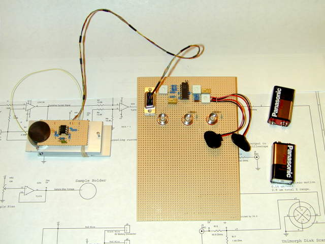
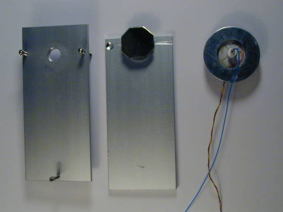

A Simple Scanning Tunneling Microscope (STM).
The goal of this project is to build a simple STM that can resolve atoms, with a cost of materials less than $100.00 excluding oscilloscope. My real goal here is to provide a base of information so experimenters and students could build a simple STM. Typical piezo tubes used in tube scanners of commercial scanning probe microscopes cost in the range of $200 - $800 and operate with several hundred volts applied to the scanner. This design uses a unimorph disk scanner to reduce the cost and avoid using any high voltage. The Piezo element is commonly available and this particular one costs $1.80. The control voltages are so low that two 9-volt batteries can power the control electronics.
Microscope and control electronics

The microscope
mechanical assembly

Home Simple
STM Project Home Project
Overview Progress
Mechanical Design
Disk Scanner
Description How to Make a Disk
Scanner Mechanical Approach Mechanism
Mechanical
Bill of Materials Electronics
Design Electronics Schematics
Electronics Bill
of Materials Operating the
STM Images